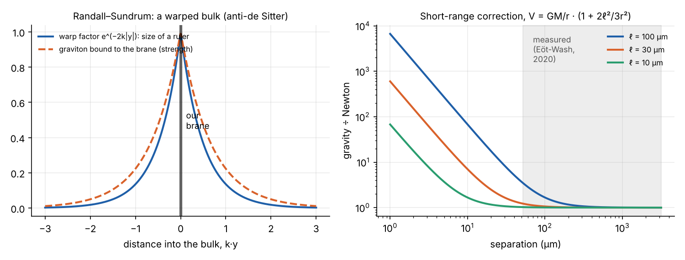

In Interstellar, the beings who place the wormhole live in “the bulk”, a space with more dimensions than ours, and they can reach us only through gravity. This explainer covers the physics behind that idea, which predates the film by a few years and is taken seriously by physicists. It is one of two explainers behind Interstellar’s Bulk. The other covers de Sitter and anti-de Sitter space, the geometry that a warped bulk is made of.
A universe on a membrane
Picture a sheet of paper inside a room. Creatures confined to the paper, as in Edwin Abbott’s Flatland, know two dimensions of space. The room is a third dimension they cannot point to. In brane-world physics, our universe, with three dimensions of space and one of time, is such a sheet: a brane (short for membrane). The larger space it sits in is the bulk.
The idea has a long history:
- 1921–1926. Theodor Kaluza showed that if spacetime had a fifth dimension, Einstein’s equations in five dimensions would contain both gravity and Maxwell’s electromagnetism. Oskar Klein explained why we don’t see the fifth dimension: it is curled into a circle far too small to notice.
- 1980s onwards. String theory needs ten dimensions of spacetime to be mathematically consistent, so it must hide six.
- 1995. Joseph Polchinski showed that string theory contains D-branes: surfaces on which the ends of open strings are stuck. The particles of the Standard Model can be open strings, so they would be confined to a brane. The graviton, the particle of gravity, is a closed loop of string with no ends, so it is free to move through the bulk.
That last point is the key to everything that follows. Light and matter stay on the brane, gravity does not. We could share a bulk with other branes, or with “bulk beings”, and never see them, because no light would ever cross. But we would feel their gravity.
How the inverse square law counts dimensions
Newton’s inverse square law is a statement about the number of dimensions. The gravitational field of a mass spreads over spheres around it. In three dimensions of space, the area of a sphere grows as \(r^2\), so the field falls as \(1/r^2\). In \(3 + n\) dimensions, a sphere’s area grows as \(r^{2+n}\), and gravity would fall as \(1/r^{2+n}\).
We measure \(1/r^2\) to high precision, from planetary orbits down to the laboratory. So any extra dimensions that gravity can enter must be hidden, in one of two ways:
- Curled up small (Kaluza and Klein’s answer). If the extra dimensions are circles of size \(L\), then at distances much larger than \(L\) the field has filled them, and spreads only in our three dimensions: the inverse square law returns. At distances smaller than \(L\), gravity feels all the dimensions and grows steeply stronger.
- Warped (Randall and Sundrum’s answer, below). The extra dimension can even be infinite, if the geometry of the bulk holds gravity close to the brane.
The first case can be calculated exactly by the method of images: a mass in a space with one circular dimension acts like an infinite row of copies of itself, spaced \(L\) apart along the extra dimension.

Large extra dimensions (ADD, 1998)
Gravity is absurdly weak. Between two protons, it is about \(10^{36}\) times weaker than their electric repulsion. In 1998, Nima Arkani-Hamed, Savas Dimopoulos and Gia Dvali (ADD) suggested that gravity is not intrinsically weak: it only looks weak because it is diluted across extra dimensions that the other forces cannot enter.
With \(n\) extra dimensions of size \(R\), Newton’s constant that we measure is related to the true, higher-dimensional strength of gravity by roughly
\[ M_\text{Planck}^2 \sim M_*^{\,2+n} R^{\,n}, \]
where \(M_\text{Planck} \approx 1.2 \times 10^{19}\) GeV is the energy at which gravity appears to become strong and \(M_*\) is the energy at which it truly does. If gravity’s true scale \(M_*\) were about 1 TeV, close to the other forces, then:
- one extra dimension would have to be about the size of the solar system, which is ruled out by planetary orbits;
- two extra dimensions would be about a millimetre across, just below what had been measured in 1998;
- more extra dimensions would be smaller still.
The idea set off a search for deviations from the inverse square law at short range. The Eöt-Wash group at the University of Washington built torsion balances that measure the gravitational pull between metal plates a fraction of a millimetre apart. Their 2020 result found Newton’s law holding down to 52 micrometres, which requires the largest extra dimension to be smaller than about 30 micrometres. The Large Hadron Collider has also searched for gravitons escaping into extra dimensions, and found none.
The warped bulk (Randall and Sundrum, 1999)
Lisa Randall and Raman Sundrum found a second way to hide an extra dimension: curve it. In their models, the bulk is a slice of anti-de Sitter space, a spacetime with negative curvature (de Sitter and anti-de Sitter explainer). Its metric is
\[ ds^2 = e^{-2k|y|}\,\eta_{\mu\nu}\,dx^\mu dx^\nu + dy^2 , \]
where \(y\) is the distance from our brane into the bulk, \(\eta_{\mu\nu}\) is ordinary flat four-dimensional spacetime, and \(1/k = \ell\) is the curvature radius of the anti-de Sitter space. The warp factor \(e^{-2k|y|}\) says that lengths and clocks shrink exponentially with distance from the brane.
They wrote two papers:
- RS1 has two branes a fixed distance apart. The warping between them makes energies on the second brane exponentially smaller than on the first, which offers an explanation of why gravity is so much weaker than the other forces. A separation of about 37 curvature radii is enough to account for the factor of \(10^{16}\) between the Planck energy and the energy of the weak force, because \(e^{-37} \approx 10^{-16}\).
- RS2 has a single brane and an infinite extra dimension. Gravity still follows the inverse square law, because the warping traps the graviton near the brane: its strength falls off with distance into the bulk. Gravity only feels the extra dimension at distances shorter than \(\ell\), where Newton’s potential acquires a correction:
\[ V(r) = -\frac{GMm}{r}\left(1 + \frac{2\ell^2}{3r^2}\right). \]

Kip Thorne’s bulk
In The Science of Interstellar, Kip Thorne builds the film’s bulk from these ideas. He gives it one extra space dimension, and says that for gravity to follow the inverse square law as accurately as it does, our brane must be surrounded by a layer of anti-de Sitter warping, sandwiched between two confining branes. The warping redirects the gravitational influence of bulk objects so that only a tiny fraction of it reaches our brane, which is why we don’t notice gravity from things in the bulk in everyday life.
Thorne then points out a problem: according to Einstein’s equations, the confining branes are under pressure and prone to buckle, like a playing card squeezed between two fingers. If they did, they would collide with our brane and destroy our universe. In the film’s science, as Professor Brand might reason, the universe has not been destroyed, so some field in the bulk must be pushing the branes back into shape. Thorne then uses the same kind of bulk field to hold the wormhole open.
That chain of reasoning is Thorne’s extrapolation, not established physics. What is established is more modest:
| Idea | Status |
|---|---|
| Extra dimensions can be hidden by being small or warped | Mathematically consistent, studied since the 1920s |
| In string theory, matter is confined to branes and gravity is not | A standard feature of string theory, which is itself untested |
| Large or warped extra dimensions | Proposed in 1998–99; no evidence so far, and limited to below about 30 micrometres |
| Confining branes stabilised by bulk fields | Thorne’s extrapolation for the film |
| Beings living in the bulk | Fiction |
Summary
- A brane is a universe confined to a membrane in a larger bulk. In string theory, particles of matter and light are stuck to branes, but gravitons can travel through the bulk.
- The inverse square law counts dimensions. Extra dimensions are only allowed if they are small enough, or warped enough, that gravity behaves like \(1/r^2\) at every distance we have measured.
- ADD’s large extra dimensions would make gravity’s weakness an illusion of dilution. Randall and Sundrum’s warped, anti-de Sitter bulk can hide even an infinite extra dimension.
- Torsion balances find Newton’s law intact down to 52 micrometres, so any extra dimension gravity can enter must be smaller than about 30 micrometres.
References
- T. Kaluza, “Zum Unitätsproblem der Physik”, Sitzungsberichte der Preussischen Akademie der Wissenschaften (1921); O. Klein, “Quantentheorie und fünfdimensionale Relativitätstheorie”, Zeitschrift für Physik 37, 895 (1926).
- J. Polchinski, “Dirichlet branes and Ramond–Ramond charges”, Physical Review Letters 75, 4724 (1995).
- N. Arkani-Hamed, S. Dimopoulos and G. Dvali, “The hierarchy problem and new dimensions at a millimeter”, Physics Letters B 429, 263 (1998).
- L. Randall and R. Sundrum, “A large mass hierarchy from a small extra dimension”, Physical Review Letters 83, 3370 (1999), and “An alternative to compactification”, Physical Review Letters 83, 4690 (1999).
- J. Garriga and T. Tanaka, “Gravity in the brane world”, Physical Review Letters 84, 2778 (2000): the \(2\ell^2/3r^2\) correction.
- J. G. Lee, E. G. Adelberger, T. S. Cook, S. M. Fleischer and B. R. Heckel, “New test of the gravitational 1/r² law at separations down to 52 μm”, Physical Review Letters 124, 101101 (2020).
- K. S. Thorne, The Science of Interstellar (W. W. Norton, 2014), the chapters on the bulk and on confining gravity.
Code: src/interstellar/figs.py.